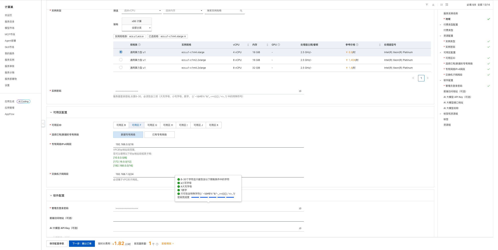
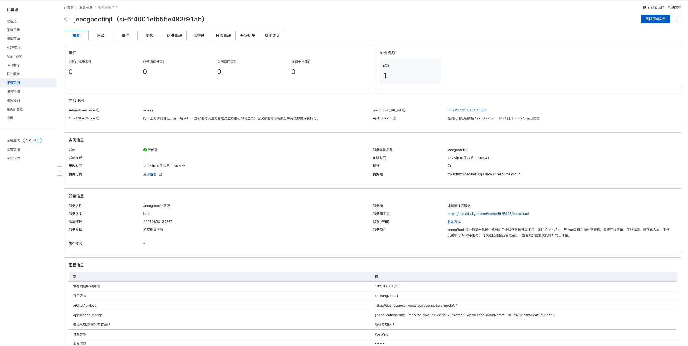
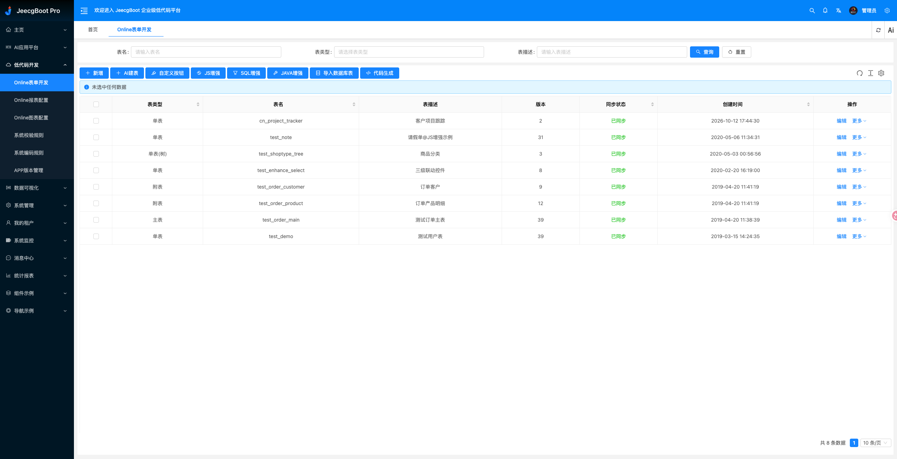

JeecgBoot 计算巢部署文档
概述
JeecgBoot 是一款基于 Spring Boot 和 Vue 3 的开源低代码开发平台，提供 Online 表单、代码生成、流程、报表、权限管理和 AI 应用等能力。本方案将 JeecgBoot 前后端、MySQL、Redis 和 pgvector 以 Docker 容器部署到用户自己的阿里云 ECS 中。
| 项目 | 说明 |
|---|---|
| 服务 ID | service-db27732e87b846b4afed |
| 部署形态 | 单台 ECS + Docker |
| 访问端口 | 80（HTTP） |
| 管理员用户名 | admin |
| API 文档 | /jeecgboot/doc.html |
| 实测部署耗时 | 约 134 秒 |
部署步骤
1. 打开创建页面

2. 配置部署参数
| 参数 | 说明 | 建议 |
|---|---|---|
| 服务实例名称 | 控制台中用于识别本次部署 | 保持默认或自定义 |
| 地域与可用区 | ECS 所在位置 | 选择接近使用者且有库存的可用区 |
| 付费类型 | 按量付费或包年包月 | 测试使用按量付费 |
| 实例类型 | ECS 规格 | 最低可选 4 vCPU / 16 GiB |
| 实例密码 | ECS 登录密码 | 使用符合页面规则的强密码 |
| 管理员登录密码 | admin 账号首次登录密码 |
使用不同于 ECS 密码的强密码 |
| 前端访问地址 | 自定义域名或 URL | 可留空，自动使用实例公网 IP |
| AI 大模型 API Key | 启用 AI 助手时使用 | 可留空；不要填写到非可信环境 |
| AI 接口地址 | OpenAI 兼容接口 | 默认使用阿里云百炼兼容地址 |
| AI 模型名称 | AI 助手调用的模型 | 默认 qwen-plus |
| 专有网络 | 新建或复用 VPC | 首次部署可选择新建 |
填写完成并看到询价结果后，点击“下一步：确认订单”，核对资源和费用，勾选服务协议并创建实例。
3. 等待部署完成
进入服务实例详情页，等待状态变为“已部署”。本次实测从创建到部署完成约 134 秒。

“立即使用”区域会显示：
jeecgboot_80_url：JeecgBoot 访问地址；QuickStartGuide：首次登录说明；AdminUsername：管理员用户名；ApiDocPath：Knife4j 接口文档路径。
首次访问与使用
打开 jeecgboot_80_url，使用用户名 admin 和部署时设置的管理员登录密码登录。首次访问时如数据库仍在初始化，请等待数分钟后重试。
登录后可进入“低代码开发 → Online 表单开发”创建业务表。发布前实测创建了包含项目名称和项目状态字段的表单，并执行普通同步；刷新页面后表单仍存在且状态保持“已同步”。

Knife4j 接口文档位于访问地址后的 /jeecgboot/doc.html。
可用性验证
| 验证项 | 结果 |
|---|---|
| 服务实例 | 状态为“已部署” |
| 应用访问 | 登录页和管理后台正常加载 |
| 身份认证 | 使用部署时设置的管理员密码成功登录 |
| Online 表单 | 成功创建 cn_project_tracker 表单 |
| 数据库同步 | 普通同步成功，状态变为“已同步” |
| 数据持久化 | 刷新页面后表单和同步状态仍存在 |
数据与安全
- JeecgBoot、MySQL、Redis 和 pgvector 均运行在用户自己的 ECS 中。
- 部署参数文件位于
/opt/jeecgboot/params，密码和 API Key 文件具有受限权限；不要复制、上传或提交这些文件。 - 默认通过公网 HTTP 80 端口访问。生产环境建议限制安全组来源，并为自定义域名配置 HTTPS。
- AI API Key 为可选项；不使用 AI 助手时保持为空。
- 删除服务实例会同时删除 ECS 及其本地数据，释放前请先完成数据库和附件备份。
资源释放
不再使用时，在计算巢服务实例详情页执行“删除”。删除完成后建议继续确认：
- 服务实例已不存在；
- ROS 资源栈状态为
DELETE_COMPLETE； - ECS、VPC、交换机和安全组均无残留；
- 账单中不再产生相关按量资源费用。
官方链接
© 2009-2022 Aliyun.com 版权所有